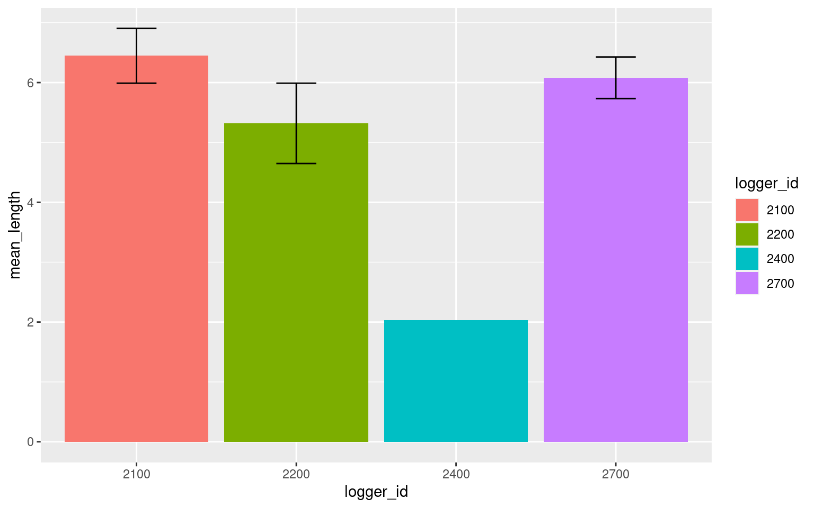
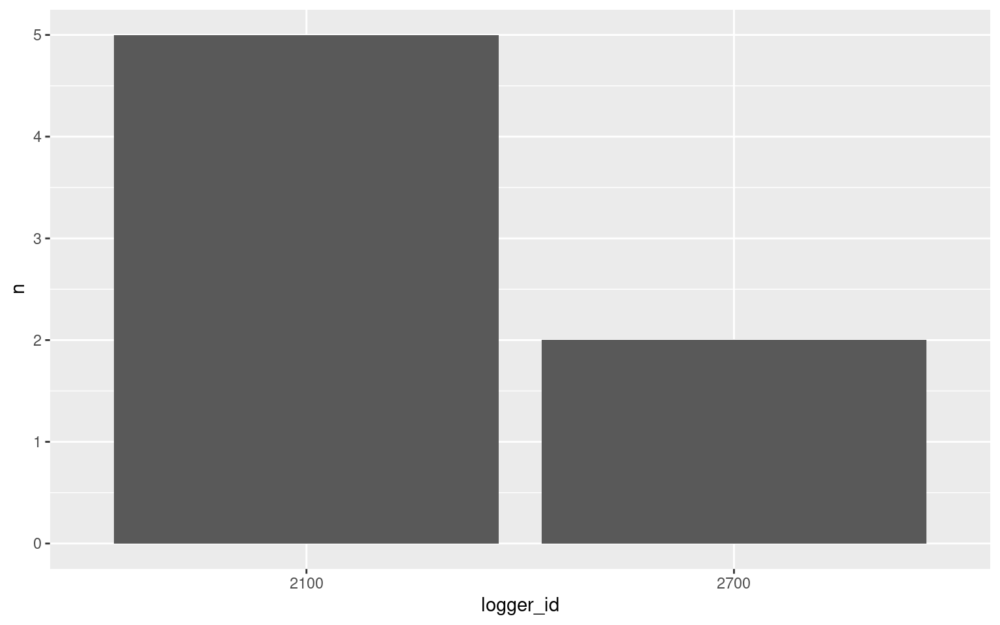
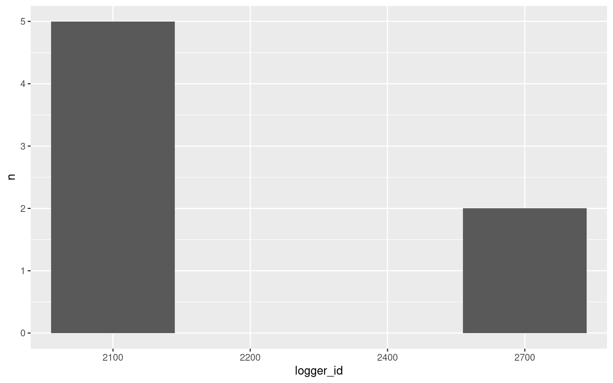
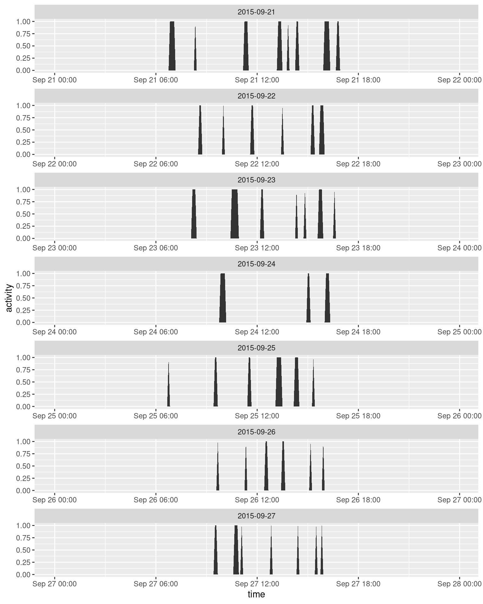
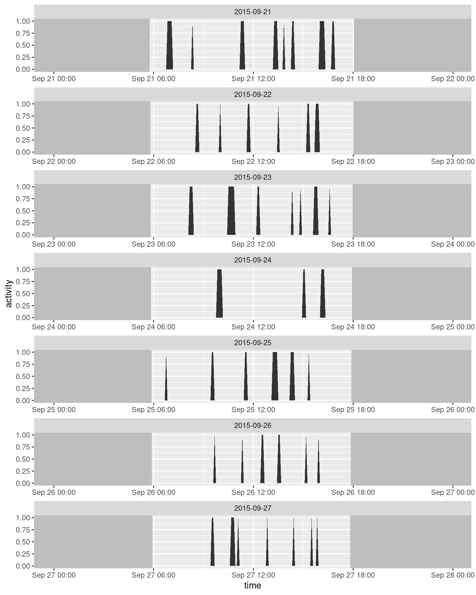
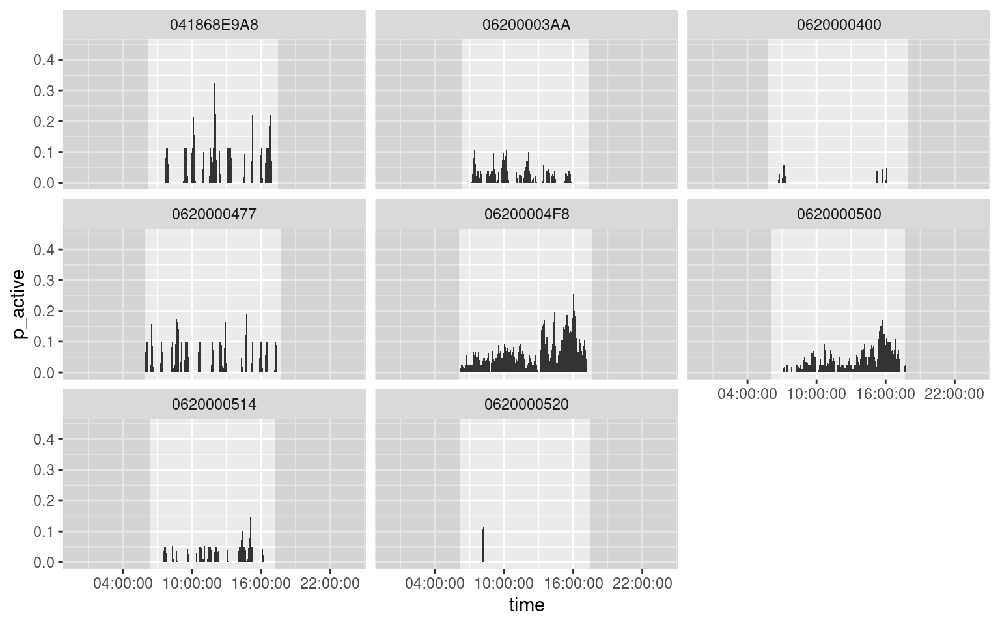
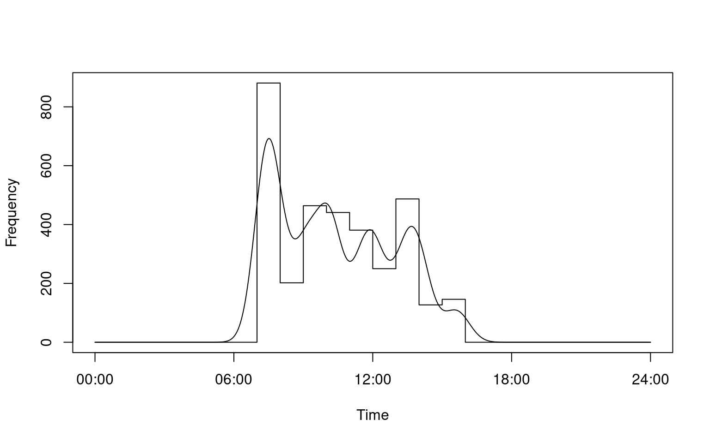
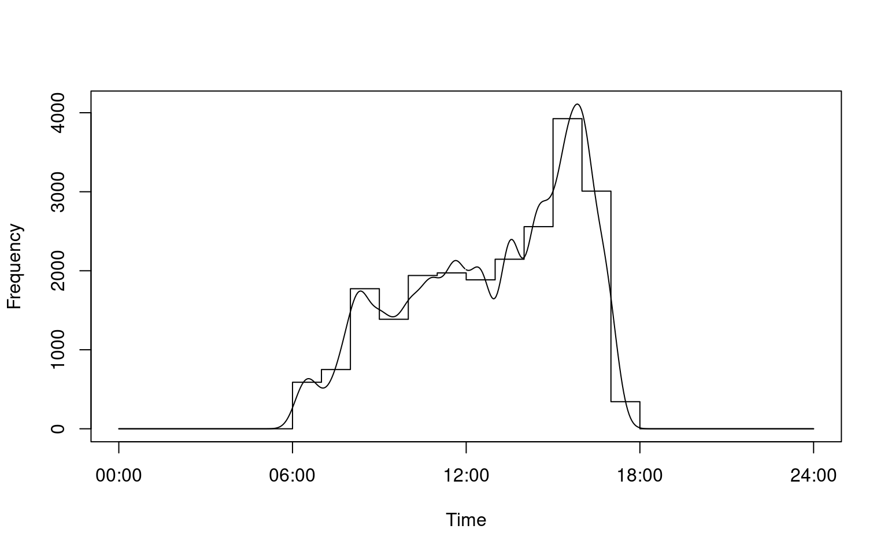

Transforming/Summarizing Data
This section will get you started with transforming and summarizing your data from raw read data to a variety of different data types which can be used to answer different questions.
Here we assume that you know how to load/import your data and that, if needed, you’ve cleaned up problematic animal_ids with the various housekeeping functions.
Note that for several examples of summarizing, we’ll be using functions from the tidyverse including the magrittr pipe %>%, which essentially ‘pipes’ the output of the first line to the next line, see this intro to the pipe for more details.
library(tidyverse)Functions
In all cases you’ll want to use the visits() function first, but after that it depends on what kinda of data you want to end up with.
visits()- Visits to a loggermove()- Movements between loggerspresence()- Presence around a loggerdisp()- Displacement from a loggeractivity()- Activity patternsdaily()- Daily activity patterns- Conversion functions - Functions to convert data for use by other packages
- Working with multiple groups - Applying transformations to different data groups simultaneously
Or click on the function name below to skip directly to the function tutorial:
visits()
This function is designed to turn ‘raw’ data into ‘visits’ data.
This is always the first function you should use. Raw read data contains an individual line of data for each read event made by the RFID logger.
For example, if the logger was set to record ids every ~2 seconds, an individual sitting on the logger for 8 seconds followed by a 12 second gap before returning would look something like this:
head(finches_lg)## animal_id date time logger_id species age sex site_name lon lat
## 1 041868E9A8 2015-10-01 2015-10-01 16:38:52 2100 House Finch AHY F Kamloops, BC -120.3624 50.66896
## 2 041868E9A8 2015-10-01 2015-10-01 16:38:54 2100 House Finch AHY F Kamloops, BC -120.3624 50.66896
## 3 041868E9A8 2015-10-01 2015-10-01 16:38:56 2100 House Finch AHY F Kamloops, BC -120.3624 50.66896
## 4 041868E9A8 2015-10-01 2015-10-01 16:38:58 2100 House Finch AHY F Kamloops, BC -120.3624 50.66896
## 5 041868E9A8 2015-10-01 2015-10-01 16:39:00 2100 House Finch AHY F Kamloops, BC -120.3624 50.66896
## 6 041868E9A8 2015-10-01 2015-10-01 16:39:12 2100 House Finch AHY F Kamloops, BC -120.3624 50.66896The visits() function turns this raw data into something more practical:
v <- visits(finches_lg)
head(v)## # A tibble: 6 x 13
## animal_id date start end logger_id animal_n logger_n species site_name age sex lon lat
## <fctr> <date> <dttm> <dttm> <fctr> <int> <int> <chr> <chr> <chr> <chr> <dbl> <dbl>
## 1 041868E9A8 2015-10-02 2015-10-01 16:38:52 2015-10-01 16:39:00 2100 11 4 <NA> <NA> AHY F -120.3624 50.66896
## 2 041868E9A8 2015-10-02 2015-10-01 16:39:12 2015-10-01 16:39:12 2100 11 4 <NA> <NA> AHY F -120.3624 50.66896
## 3 041868E9A8 2015-10-02 2015-10-01 16:40:53 2015-10-01 16:40:53 2100 11 4 <NA> <NA> AHY F -120.3624 50.66896
## 4 041868E9A8 2015-10-02 2015-10-01 16:45:00 2015-10-01 16:45:56 2700 11 4 <NA> <NA> AHY F -120.3632 50.66909
## 5 041868E9A8 2015-10-02 2015-10-01 16:46:31 2015-10-01 16:46:31 2700 11 4 <NA> <NA> AHY F -120.3632 50.66909
## 6 041868E9A8 2015-10-02 2015-10-01 16:51:03 2015-10-01 16:51:16 2700 11 4 <NA> <NA> AHY F -120.3632 50.66909We can see that the first series of raw reads have been combined into one visit, starting at 2015-10-01 17:38:52 and ending at 2015-10-01 17:39:00.
We can also look directly at visit data for a particular individual by pulling out it’s animal_id:
head(finches_lg[finches_lg$animal_id == "06200004F8", ])## animal_id date time logger_id species age sex site_name lon lat
## 10482 06200004F8 2015-09-11 2015-09-11 15:59:06 2100 House Finch AHY F Kamloops, BC -120.3624 50.66896
## 10483 06200004F8 2015-09-11 2015-09-11 15:59:09 2100 House Finch AHY F Kamloops, BC -120.3624 50.66896
## 10484 06200004F8 2015-09-11 2015-09-11 15:59:12 2100 House Finch AHY F Kamloops, BC -120.3624 50.66896
## 10485 06200004F8 2015-09-11 2015-09-11 15:59:15 2100 House Finch AHY F Kamloops, BC -120.3624 50.66896
## 10486 06200004F8 2015-09-11 2015-09-11 15:59:18 2100 House Finch AHY F Kamloops, BC -120.3624 50.66896
## 10487 06200004F8 2015-09-11 2015-09-11 15:59:21 2100 House Finch AHY F Kamloops, BC -120.3624 50.66896head(v[v$animal_id == "06200004F8", ])## # A tibble: 6 x 13
## animal_id date start end logger_id animal_n logger_n species site_name age sex lon lat
## <fctr> <date> <dttm> <dttm> <fctr> <int> <int> <chr> <chr> <chr> <chr> <dbl> <dbl>
## 1 06200004F8 2015-09-11 2015-09-11 15:59:06 2015-09-11 16:00:12 2100 11 4 House Finch Kamloops, BC AHY F -120.3624 50.66896
## 2 06200004F8 2015-09-12 2015-09-11 16:00:17 2015-09-11 16:00:32 2100 11 4 House Finch Kamloops, BC AHY F -120.3624 50.66896
## 3 06200004F8 2015-09-12 2015-09-11 16:01:19 2015-09-11 16:03:29 2100 11 4 House Finch Kamloops, BC AHY F -120.3624 50.66896
## 4 06200004F8 2015-09-12 2015-09-11 16:03:33 2015-09-11 16:06:59 2100 11 4 House Finch Kamloops, BC AHY F -120.3624 50.66896
## 5 06200004F8 2015-09-12 2015-09-12 10:53:13 2015-09-12 10:55:13 2100 11 4 House Finch Kamloops, BC AHY F -120.3624 50.66896
## 6 06200004F8 2015-09-12 2015-09-12 10:55:17 2015-09-12 10:55:40 2100 11 4 House Finch Kamloops, BC AHY F -120.3624 50.66896Alternatively, you can use filter(v, animal_id == "06200004F8") from the dplyr package or subset(v, animal_id == "06200004F8") which is built into R base.
Visits are defined by:
- How much time has passed between reads (
bw) - A change in
animal_idbetween two successive reads - A change in
logger_idbetween two successive reads (although generally this shouldn’t be a defining point, because thebwshould be smaller than the length of time it takes to move from one logger to another)
Data returned
The data returned by the visit function contains both new and old data:
animal_idid of the animal making the visitdatethe date of the start of the visitstartthe time of the start of the visitendthe time of the end of the visitlogger_idthe id of the logger being visitedanimal_nthe number of uniqueanimal_ids in the data setlogger_nthe number of uniquelogger_ids in the data set
Note that several of these new values could also have been obtained by hand:
length(unique(v$animal_id))## [1] 11length(unique(v$logger_id))## [1] 4species, sex, lon and lat are all columns originally in the finches_lg data set, they were automatically passed through the visits() function. Columns of extra data that are associated with either a date, an animal_id, or a logger_id will always be passed through unless pass = FALSE:
visits(finches_lg, pass = FALSE)## # A tibble: 2,945 x 7
## animal_id date start end logger_id animal_n logger_n
## <fctr> <date> <dttm> <dttm> <fctr> <int> <int>
## 1 041868E9A8 2015-10-02 2015-10-01 16:38:52 2015-10-01 16:39:00 2100 11 4
## 2 041868E9A8 2015-10-02 2015-10-01 16:39:12 2015-10-01 16:39:12 2100 11 4
## 3 041868E9A8 2015-10-02 2015-10-01 16:40:53 2015-10-01 16:40:53 2100 11 4
## 4 041868E9A8 2015-10-02 2015-10-01 16:45:00 2015-10-01 16:45:56 2700 11 4
## 5 041868E9A8 2015-10-02 2015-10-01 16:46:31 2015-10-01 16:46:31 2700 11 4
## 6 041868E9A8 2015-10-02 2015-10-01 16:51:03 2015-10-01 16:51:16 2700 11 4
## 7 041868E9A8 2015-10-02 2015-10-01 16:51:42 2015-10-01 16:51:58 2700 11 4
## 8 041868E9A8 2015-10-02 2015-10-01 16:52:51 2015-10-01 16:53:07 2700 11 4
## 9 041868E9A8 2015-10-02 2015-10-01 16:53:41 2015-10-01 16:54:57 2700 11 4
## 10 041868E9A8 2015-10-02 2015-10-01 16:56:42 2015-10-01 16:56:42 2700 11 4
## # ... with 2,935 more rowsbw
Depending on the interval between reads in your RFID logger, you may have to adjust the value of bw which specifies how many seconds between reads separates two visits. The default is 3 seconds, but if your loggers scan at a slower interval, you will need to adjust the bw argument:
visits(finches_lg, bw = 15)## # A tibble: 1,957 x 13
## animal_id date start end logger_id animal_n logger_n species site_name age sex lon lat
## <fctr> <date> <dttm> <dttm> <fctr> <int> <int> <chr> <chr> <chr> <chr> <dbl> <dbl>
## 1 041868E9A8 2015-10-02 2015-10-01 16:38:52 2015-10-01 16:39:12 2100 11 4 <NA> <NA> AHY F -120.3624 50.66896
## 2 041868E9A8 2015-10-02 2015-10-01 16:40:53 2015-10-01 16:40:53 2100 11 4 <NA> <NA> AHY F -120.3624 50.66896
## 3 041868E9A8 2015-10-02 2015-10-01 16:45:00 2015-10-01 16:45:56 2700 11 4 <NA> <NA> AHY F -120.3632 50.66909
## 4 041868E9A8 2015-10-02 2015-10-01 16:46:31 2015-10-01 16:46:31 2700 11 4 <NA> <NA> AHY F -120.3632 50.66909
## 5 041868E9A8 2015-10-02 2015-10-01 16:51:03 2015-10-01 16:51:16 2700 11 4 <NA> <NA> AHY F -120.3632 50.66909
## 6 041868E9A8 2015-10-02 2015-10-01 16:51:42 2015-10-01 16:51:58 2700 11 4 <NA> <NA> AHY F -120.3632 50.66909
## 7 041868E9A8 2015-10-02 2015-10-01 16:52:51 2015-10-01 16:53:07 2700 11 4 <NA> <NA> AHY F -120.3632 50.66909
## 8 041868E9A8 2015-10-02 2015-10-01 16:53:41 2015-10-01 16:54:57 2700 11 4 <NA> <NA> AHY F -120.3632 50.66909
## 9 041868E9A8 2015-10-02 2015-10-01 16:56:42 2015-10-01 16:56:42 2700 11 4 <NA> <NA> AHY F -120.3632 50.66909
## 10 041868E9A8 2015-10-02 2015-10-02 09:57:00 2015-10-02 09:57:14 2200 11 4 House Finch Kamloops, BC AHY F -120.3612 50.66778
## # ... with 1,947 more rowsImpossible/missing visits
You should also be aware of ‘impossible visits’. These may occur if the internal clocks on your RFIDs are not in sync, or if your loggers are very close to each other. An impossible visit is when an individual animal is detected at two different loggers within 2 seconds (the default) of each other. Unless your loggers are REALLY close to each other, this is highly unlikely.
Because both missing values (NAs) and impossible visits likely indicate a greater underlying problem, you have to specifically tell the function to ignore them (or omit them, in the case of NAs).
v <- visits(finches_lg, allow_imp = TRUE, na_rm = TRUE)You can define the minimum number of seconds needed to travel between loggers to specify which visits should be considered impossible. For example, if we say that it must take animals at least 3 minutes to travel between loggers, any visit made to a different logger within 3 minutes would be defined as ‘impossible’:
visits(finches_lg, bw_imp = 180)## Error: Impossible visits found (n = 52), no specification for how to handle:
##
## Individual(s) detected at 2+ loggers within 180s.
## Decrease the `bw_imp` argument, remove these reads, or
## allow impossible visits (allow_imp = TRUE) and try again.
##
## First 6 impossible visits:
## animal_id time logger_id
## 1 0620000477 2015-09-28 06:07:19 2700
## 2 0620000477 2015-09-28 06:09:32 2100
## 3 06200004F8 2015-09-16 16:40:19 2100
## 4 06200004F8 2015-09-16 16:42:22 2700
## 5 06200004F8 2015-09-16 16:44:11 2700
## 6 06200004F8 2015-09-16 16:45:10 2100Summarizing
Visit data is the starting block of all other transformations, but you can also summarize and analyze visit data in itself.
For example, if we want to create daily summaries of the number of visits made and loggers used per animal_id, we could use the dplyr package (part of the tidyverse family of packages).
Currently we have data on the total number of loggers in the data set, but what if we wanted to know how many loggers each individual used?
library(dplyr)
visit_summary <- v %>%
group_by(animal_id) %>%
summarize(n_visits = length(start),
n_loggers = length(unique(logger_id)),
n_days = length(unique(date)),
mean_visit_length = mean(as.numeric(difftime(end, start, units = "sec"))))
visit_summary## # A tibble: 11 x 5
## animal_id n_visits n_loggers n_days mean_visit_length
## <fctr> <int> <int> <int> <dbl>
## 1 041868E9A8 150 3 7 12.846667
## 2 041869123C 34 1 2 3.264706
## 3 06200003AA 321 2 21 22.096573
## 4 0620000400 31 2 5 11.580645
## 5 062000043E 1 1 1 2.000000
## 6 0620000477 105 2 10 109.542857
## 7 06200004F8 1179 4 42 36.536047
## 8 0620000500 961 3 36 17.145682
## 9 0620000513 5 1 1 51.800000
## 10 0620000514 142 3 17 15.866197
## 11 0620000520 16 1 2 10.625000A Side Note
This bit of code uses a slightly advanced technique called ‘pipes’: %>% These allow you to pass the output from one line directly down to the next line where it becomes the first (and hidden) argument. In this case, the first line specifies our visits data frame v, this then becomes the input for group_by(). The output of group_by() then becomes the input for summarize(). This makes your coding more efficient but may take a bit of getting used to.
You can find an in-depth look at dplyr, pipes and related packages here: http://r4ds.had.co.nz/transform.html
For reference, you can achieve the same effect without pipes:
library(dplyr)
visit_summary <- group_by(v, animal_id)
visit_summary <- summarize(visit_summary,
n_visits = length(start),
n_loggers = length(unique(logger_id)),
n_days = length(unique(date)),
mean_visit_length = mean(as.numeric(difftime(end, start, units = "sec"))))
visit_summary## # A tibble: 11 x 5
## animal_id n_visits n_loggers n_days mean_visit_length
## <fctr> <int> <int> <int> <dbl>
## 1 041868E9A8 150 3 7 12.846667
## 2 041869123C 34 1 2 3.264706
## 3 06200003AA 321 2 21 22.096573
## 4 0620000400 31 2 5 11.580645
## 5 062000043E 1 1 1 2.000000
## 6 0620000477 105 2 10 109.542857
## 7 06200004F8 1179 4 42 36.536047
## 8 0620000500 961 3 36 17.145682
## 9 0620000513 5 1 1 51.800000
## 10 0620000514 142 3 17 15.866197
## 11 0620000520 16 1 2 10.625000The result is a data frame with one row for each animal_id, giving us information on how many loggers that animal has used, how many visits they have made, over how many days, and what the average visit length was.
If we wanted to plot this data, the package ggplot2 is a great option:
library(ggplot2)
ggplot(data = visit_summary, aes(x = animal_id, y = mean_visit_length)) +
theme(axis.text.x = element_text(angle = 45, hjust = 1)) + #rotate/shift id labels
geom_bar(stat = "identity") + # Create bars
labs(x = "Animal ID", y = "Average visit length (s)") # Make labels pretty| Back to top |
move()
This function is designed to turn ‘Visit’ data into ‘Movement’ data.
Movements are defined as trips between loggers (i.e. a event when a visit from one animal_id occurs at a different logger from the previous visit by that particular animal_id).
v <- visits(finches_lg, bw = 5)
m <- move(v)
head(m)## # A tibble: 6 x 15
## animal_id date time logger_id direction move_id move_dir move_path strength animal_n logger_n age sex lon lat
## <fctr> <date> <dttm> <fctr> <chr> <int> <fctr> <fctr> <dbl> <int> <int> <chr> <chr> <dbl> <dbl>
## 1 041868E9A8 2015-10-02 2015-10-01 16:40:53 2100 left 1 2100_2700 2100_2700 14.57489879 11 4 AHY F -120.3624 50.66896
## 2 041868E9A8 2015-10-02 2015-10-01 16:45:00 2700 arrived 1 2100_2700 2100_2700 14.57489879 11 4 AHY F -120.3632 50.66909
## 3 041868E9A8 2015-10-02 2015-10-01 16:56:42 2700 left 2 2700_2200 2200_2700 0.05880623 11 4 AHY F -120.3632 50.66909
## 4 041868E9A8 2015-10-02 2015-10-02 09:57:00 2200 arrived 2 2700_2200 2200_2700 0.05880623 11 4 AHY F -120.3612 50.66778
## 5 041868E9A8 2015-10-06 2015-10-06 13:24:50 2200 left 3 2200_2700 2200_2700 0.59504132 11 4 AHY F -120.3612 50.66778
## 6 041868E9A8 2015-10-06 2015-10-06 15:05:40 2700 arrived 3 2200_2700 2200_2700 0.59504132 11 4 AHY F -120.3632 50.66909Data returned
This function returns a lot of information for each movement event. Note, in particular, that each movement event results in two rows of data: leaving and arriving
animal_idid of the animal making the movedatethe date of the event (either arriving or leaving)timethe time of the event (either arriving or leaving)logger_idthe logger left or arrived atdirectionleaving or arrivingmove_idfor each individual, a unique number tying the two events (leaving/arriving) of the movement togethermove_dircategory indicating direction of the movement and the loggers involvedmove_pathcategory indicating the loggers involved (no directionality)strengtha metric indicating how ‘easily’ individuals move been loggers, it represents 1/time between loggers
animal_n, logger_n, species, sex, lon, and lat are extra columns passed through (see visits data for more information).
Include all
In this case, four animal_id have been omitted because they never moved between loggers. While the id is retained in the levels of the factor, animal_id, it is not present in the data frame:
unique(m$animal_id) # The animal_ids currently in the movement data## [1] 041868E9A8 06200003AA 0620000400 0620000477 06200004F8 0620000500 0620000514
## Levels: 041868E9A8 041869123C 06200003AA 0620000400 062000043E 0620000477 06200004F8 0620000500 0620000513 0620000514 0620000520length(unique(m$animal_id)) # The number of animal_ids currently in the data## [1] 7length(levels(m$animal_id)) # The number of levels of animal_id## [1] 11However, if you wanted to retain all animals in the data set, regardless of whether they moved or not (for example, if you wanted to look at the likelihood of moving between loggers), you can specify that:
m <- move(v, all = TRUE)
unique(m$animal_id) # The animal_ids currently in the movement data## [1] 041868E9A8 041869123C 06200003AA 0620000400 062000043E 0620000477 06200004F8 0620000500 0620000513 0620000514 0620000520
## Levels: 041868E9A8 041869123C 06200003AA 0620000400 062000043E 0620000477 06200004F8 0620000500 0620000513 0620000514 0620000520length(unique(m$animal_id)) # The number of animal_ids currently in the data## [1] 11length(levels(m$animal_id)) # The number of levels of animal_id## [1] 11Here we’ve told R that an additional parameter for move() is all = TRUE. animals which never visit more than one logger will have NA’s in the data frame:
m[is.na(m$direction), ]## # A tibble: 4 x 15
## animal_id date time logger_id direction move_id move_dir move_path strength animal_n logger_n age sex lon lat
## <fctr> <date> <dttm> <fctr> <chr> <dbl> <fctr> <fctr> <dbl> <int> <int> <chr> <chr> <dbl> <dbl>
## 1 041869123C NA NA <NA> <NA> NA <NA> <NA> NA NA NA AHY M NA NA
## 2 062000043E NA NA <NA> <NA> NA <NA> <NA> NA NA NA ASY M NA NA
## 3 0620000513 NA NA <NA> <NA> NA <NA> <NA> NA NA NA AHY F NA NA
## 4 0620000520 NA NA <NA> <NA> NA <NA> <NA> NA NA NA AHY M NA NASummarizing
Once again we can summarize movement data using the dplyr package.
Are certain paths used more often?
move_summary <- m %>%
group_by(move_path, logger_id) %>%
summarize(n = length(move_path))
move_summary## # A tibble: 11 x 3
## # Groups: move_path [?]
## move_path logger_id n
## <fctr> <fctr> <int>
## 1 2100_2200 2100 12
## 2 2100_2200 2200 12
## 3 2100_2400 2100 1
## 4 2100_2400 2400 1
## 5 2100_2700 2100 159
## 6 2100_2700 2700 159
## 7 2200_2700 2200 15
## 8 2200_2700 2700 15
## 9 2400_2700 2400 1
## 10 2400_2700 2700 1
## 11 <NA> <NA> 4The NAs reflect the four individuals that did not move.
Note that because there are two rows per movement event (leaving and arriving), we group by logger_id to summarize individually by logger (resulting in duplicate ns per move_path. This will account for the 2 rows and keep logger ids in the final data frame (required for mapping later on).
However, if you only wanted move_path and n, you could simply omit logger_id and remove duplicates:
move_summary %>%
select(-logger_id) %>%
unique()## # A tibble: 6 x 2
## # Groups: move_path [6]
## move_path n
## <fctr> <int>
## 1 2100_2200 12
## 2 2100_2400 1
## 3 2100_2700 159
## 4 2200_2700 15
## 5 2400_2700 1
## 6 <NA> 4ggplot(data = move_summary, aes(x = move_path, y = n)) +
geom_bar(stat = "identity")Are certain directions on particular paths used more often? (i.e. do birds go back and forth or do they circle around?)
move_summary <- m %>%
group_by(logger_id, move_path, move_dir) %>%
summarize(n = length(move_path))
head(move_summary)## # A tibble: 6 x 4
## # Groups: logger_id, move_path [4]
## logger_id move_path move_dir n
## <fctr> <fctr> <fctr> <int>
## 1 2100 2100_2200 2200_2100 6
## 2 2100 2100_2200 2100_2200 6
## 3 2100 2100_2400 2100_2400 1
## 4 2100 2100_2700 2700_2100 79
## 5 2100 2100_2700 2100_2700 80
## 6 2200 2100_2200 2200_2100 6ggplot(data = move_summary, aes(x = move_path, y = n, fill = move_dir)) +
geom_bar(stat = "identity", position = "dodge", colour = "black")Is there a relationship between use of a path and the average ‘strength’?
move_summary <- m %>%
group_by(logger_id, move_path) %>%
summarize(n = length(move_path),
strength = mean(strength, na.rm = TRUE))
move_summary## # A tibble: 11 x 4
## # Groups: logger_id [?]
## logger_id move_path n strength
## <fctr> <fctr> <int> <dbl>
## 1 2100 2100_2200 12 1.2150942
## 2 2100 2100_2400 1 3.9560440
## 3 2100 2100_2700 159 10.5643650
## 4 2200 2100_2200 12 1.2150942
## 5 2200 2200_2700 15 0.8765755
## 6 2400 2100_2400 1 3.9560440
## 7 2400 2400_2700 1 0.1445725
## 8 2700 2100_2700 159 10.5643650
## 9 2700 2200_2700 15 0.8765755
## 10 2700 2400_2700 1 0.1445725
## 11 <NA> <NA> 4 NaNggplot(data = move_summary, aes(x = strength, y = n)) +
geom_point() +
stat_smooth(method = "lm") # add a regression line w/ standard error## Warning: Removed 1 rows containing non-finite values (stat_smooth).## Warning: Removed 1 rows containing missing values (geom_point).Do some animals move more than others?
move_summary <- m %>%
group_by(animal_id) %>%
summarize(n = length(move_path[!is.na(move_path)])) # Number of movements omitting NAs
move_summary## # A tibble: 11 x 2
## animal_id n
## <fctr> <int>
## 1 041868E9A8 8
## 2 041869123C 0
## 3 06200003AA 12
## 4 0620000400 6
## 5 062000043E 0
## 6 0620000477 16
## 7 06200004F8 158
## 8 0620000500 148
## 9 0620000513 0
## 10 0620000514 28
## 11 0620000520 0Note that we have some zeros because we made sure to include all individuals in the analysis (all = TRUE, above) and because we specified summarize() to count only non-NA paths (move_path[!is.na(move_path)]).
ggplot(data = move_summary, aes(x = animal_id, y = n)) +
theme(axis.text.x = element_text(angle = 45, hjust = 1)) + #rotate and shift id labels
geom_bar(stat = "identity") | Back to top |
presence()
This function is designed to turn ‘Visit’ data into ‘Presence’ data.
Presence reflects blocks of time in which an animal visited a given logger regularly. Essentially, presence is defined as a series of visits, and can overlap with presence of other animals (this differs from visits, as normally one individual’s visits cannot overlap with another). Presence near a logger ends when the individual moves to another logger or when a particular amount of time has passed without a visit (the time between visits, bw, 15 min by default).
v <- visits(finches_lg, bw = 5)
p <- presence(v)
head(p)## # A tibble: 6 x 12
## animal_id date logger_id start end length animal_n logger_n age sex lon lat
## <fctr> <date> <fctr> <dttm> <dttm> <time> <int> <int> <chr> <chr> <dbl> <dbl>
## 1 041868E9A8 2015-10-02 2100 2015-10-01 16:38:52 2015-10-01 16:40:53 2.016667 mins 11 4 AHY F -120.3624 50.66896
## 2 041868E9A8 2015-10-02 2700 2015-10-01 16:45:00 2015-10-01 16:56:42 11.700000 mins 11 4 AHY F -120.3632 50.66909
## 3 041868E9A8 2015-10-02 2200 2015-10-02 09:57:00 2015-10-02 10:11:43 14.716667 mins 11 4 AHY F -120.3612 50.66778
## 4 041868E9A8 2015-10-02 2200 2015-10-02 11:45:37 2015-10-02 12:06:27 20.833333 mins 11 4 AHY F -120.3612 50.66778
## 5 041868E9A8 2015-10-02 2200 2015-10-02 13:22:58 2015-10-02 13:27:30 4.533333 mins 11 4 AHY F -120.3612 50.66778
## 6 041868E9A8 2015-10-02 2200 2015-10-02 14:33:42 2015-10-02 14:37:25 3.716667 mins 11 4 AHY F -120.3612 50.66778Data returned
animal_idid of the animal presentdatethe date of the start of the eventlogger_idthe logger involvedstartthe start time of the eventendthe end time of the eventlengththe length of the event in minutes
animal_n, logger_n, species, sex, lon, and lat are extra columns passed through (see visits data for more information).
bw
The user of the function may define what the minimum amount of time between visits should be. Ground truthing could help establish the amount of time an individual spends near a logger without making a logger visit and could be used to determine this cutoff time.
Note that the units for bw when defining visits is in seconds, while the units for bw when defining presence is in minutes. This reflects the different scales of the two functions.
v <- visits(finches_lg, bw = 5)
p <- presence(v, bw = 20) # Within 20 min
head(p)## # A tibble: 6 x 12
## animal_id date logger_id start end length animal_n logger_n age sex lon lat
## <fctr> <date> <fctr> <dttm> <dttm> <time> <int> <int> <chr> <chr> <dbl> <dbl>
## 1 041868E9A8 2015-10-02 2100 2015-10-01 16:38:52 2015-10-01 16:40:53 2.016667 mins 11 4 AHY F -120.3624 50.66896
## 2 041868E9A8 2015-10-02 2700 2015-10-01 16:45:00 2015-10-01 16:56:42 11.700000 mins 11 4 AHY F -120.3632 50.66909
## 3 041868E9A8 2015-10-02 2200 2015-10-02 09:57:00 2015-10-02 10:11:43 14.716667 mins 11 4 AHY F -120.3612 50.66778
## 4 041868E9A8 2015-10-02 2200 2015-10-02 11:45:37 2015-10-02 12:06:27 20.833333 mins 11 4 AHY F -120.3612 50.66778
## 5 041868E9A8 2015-10-02 2200 2015-10-02 13:22:58 2015-10-02 13:27:30 4.533333 mins 11 4 AHY F -120.3612 50.66778
## 6 041868E9A8 2015-10-02 2200 2015-10-02 14:33:42 2015-10-02 14:37:25 3.716667 mins 11 4 AHY F -120.3612 50.66778v <- visits(finches_lg, bw = 5)
p <- presence(v, bw = 90) # Within 1.5 h
head(p)## # A tibble: 6 x 12
## animal_id date logger_id start end length animal_n logger_n age sex lon lat
## <fctr> <date> <fctr> <dttm> <dttm> <time> <int> <int> <chr> <chr> <dbl> <dbl>
## 1 041868E9A8 2015-10-02 2100 2015-10-01 16:38:52 2015-10-01 16:40:53 2.0166667 mins 11 4 AHY F -120.3624 50.66896
## 2 041868E9A8 2015-10-02 2700 2015-10-01 16:45:00 2015-10-01 16:56:42 11.7000000 mins 11 4 AHY F -120.3632 50.66909
## 3 041868E9A8 2015-10-02 2200 2015-10-02 09:57:00 2015-10-02 10:11:43 14.7166667 mins 11 4 AHY F -120.3612 50.66778
## 4 041868E9A8 2015-10-02 2200 2015-10-02 11:45:37 2015-10-02 14:37:25 171.8000000 mins 11 4 AHY F -120.3612 50.66778
## 5 041868E9A8 2015-10-03 2200 2015-10-02 16:44:14 2015-10-02 16:50:15 6.0166667 mins 11 4 AHY F -120.3612 50.66778
## 6 041868E9A8 2015-10-03 2200 2015-10-03 09:25:06 2015-10-03 09:26:04 0.9666667 mins 11 4 AHY F -120.3612 50.66778The bw parameter can also be omitted entirely:
v <- visits(finches_lg, bw = 5)
p <- presence(v, bw = NULL)
head(p)## # A tibble: 6 x 12
## animal_id date logger_id start end length animal_n logger_n age sex lon lat
## <fctr> <date> <fctr> <dttm> <dttm> <time> <int> <int> <chr> <chr> <dbl> <dbl>
## 1 041868E9A8 2015-10-02 2100 2015-10-01 16:38:52 2015-10-01 16:40:53 2.016667 mins 11 4 AHY F -120.3624 50.66896
## 2 041868E9A8 2015-10-02 2700 2015-10-01 16:45:00 2015-10-01 16:56:42 11.700000 mins 11 4 AHY F -120.3632 50.66909
## 3 041868E9A8 2015-10-02 2200 2015-10-02 09:57:00 2015-10-06 13:24:50 5967.833333 mins 11 4 AHY F -120.3612 50.66778
## 4 041868E9A8 2015-10-06 2700 2015-10-06 15:05:40 2015-10-06 15:08:29 2.816667 mins 11 4 AHY F -120.3632 50.66909
## 5 041868E9A8 2015-10-06 2200 2015-10-06 15:14:47 2015-10-09 13:11:08 4196.350000 mins 11 4 AHY F -120.3612 50.66778
## 6 041869123C 2015-10-15 2200 2015-10-15 09:16:52 2015-10-16 08:27:48 1390.933333 mins 11 4 AHY M -120.3612 50.66778When bw = NULL only a move to a different logger will initiate a new presence bout. Therefore this identifies how much time passes before a new logger is visited. The end time reflects the time of the final visit to that logger before moving to a new logger, but if an individual were to visit logger A all day on day 1 and disappear on day 2 and then make one visit to logger A on day 3 before moving immediately to logger B, that first bout of ‘presence’ would be considered two days long, whereas in reality, the individual did not make any visits on one of those days.
Summarizing
What’s the average time present for each individual?
v <- visits(finches_lg, bw = 5)
p <- presence(v)
presence_summary <- p %>%
group_by(animal_id) %>%
summarize(n = length(start), ## how many rows = number of events
mean_length = mean(length)) ## mean length of events
presence_summary## # A tibble: 11 x 3
## animal_id n mean_length
## <fctr> <int> <time>
## 1 041868E9A8 28 7.37500000 mins
## 2 041869123C 2 11.92500000 mins
## 3 06200003AA 66 5.07752525 mins
## 4 0620000400 8 4.07500000 mins
## 5 062000043E 1 0.03333333 mins
## 6 0620000477 37 6.05180180 mins
## 7 06200004F8 270 7.27419753 mins
## 8 0620000500 202 5.30445545 mins
## 9 0620000513 1 6.10000000 mins
## 10 0620000514 48 4.31354167 mins
## 11 0620000520 2 4.86666667 minsIs there a relationship between the number and length of presence bouts?
ggplot(data = presence_summary, aes(x = n, y = mean_length)) +
geom_point()## Don't know how to automatically pick scale for object of type difftime. Defaulting to continuous.Do animals spend more time around certain loggers?
presence_summary <- p %>%
group_by(logger_id) %>%
summarize(n = length(start),
mean_length = mean(length),
se_length = sd(length)/sqrt(n))
presence_summary## # A tibble: 4 x 4
## logger_id n mean_length se_length
## <fctr> <int> <time> <time>
## 1 2100 272 6.447059 mins 0.4577221 mins
## 2 2200 77 5.318831 mins 0.6708895 mins
## 3 2400 1 2.033333 mins NA mins
## 4 2700 315 6.080159 mins 0.3474290 minsggplot(data = presence_summary, aes(x = logger_id, y = mean_length, fill = logger_id)) +
geom_bar(stat = "identity") +
geom_errorbar(aes(ymin = mean_length - se_length,
ymax = mean_length + se_length), width = 0.25)## Don't know how to automatically pick scale for object of type difftime. Defaulting to continuous.## Warning: Removed 1 rows containing missing values (geom_errorbar).
Note that there is only one bout of presence around logger 2400, hence the lack of errorbars.
| Back to top |
disp()
This function is designed to turn ‘visit’ data into ‘displacements’ data.
Displacements are events when one animal leaves the logger and is replaced by another animal within a certain, defined, time span.
In theory, we assume this is due to the arrival of a more dominant animal. Displacements events might therefore lead to information on relative dominance of different individuals.
Disclaimer!
It is important to ground-truth this assumption because, depending on species, displacements may not necessarily represent dominance. For example, in the case of black-capped chickadees, if the dominant male is using the logger, subsequent users of the logger may actually arrive and depart in descending order of rank. In this case, apparent ‘displacements’ may not be displacements at all.
v <- visits(finches_lg, bw = 5)
d <- disp(v)
names(d)## [1] "displacements" "summaries" "interactions"Data returned
This function returns a list with three different types of displacement information: displacements, summaries, and interactions.
head(d$displacements)## # A tibble: 6 x 12
## animal_id date left arrived logger_id role animal_n logger_n age sex lon lat
## <fctr> <date> <dttm> <dttm> <fctr> <chr> <int> <int> <chr> <chr> <dbl> <dbl>
## 1 06200004F8 2015-09-16 2015-09-16 15:26:08 2015-09-16 15:26:09 2100 displacee 11 4 AHY F -120.3624 50.66896
## 2 0620000500 2015-09-16 2015-09-16 15:26:08 2015-09-16 15:26:09 2100 displacer 11 4 HY F -120.3624 50.66896
## 3 06200004F8 2015-09-17 2015-09-17 14:09:33 2015-09-17 14:09:34 2700 displacee 11 4 AHY F -120.3632 50.66909
## 4 0620000500 2015-09-17 2015-09-17 14:09:33 2015-09-17 14:09:34 2700 displacer 11 4 HY F -120.3632 50.66909
## 5 06200004F8 2015-09-17 2015-09-17 15:25:29 2015-09-17 15:25:30 2700 displacee 11 4 AHY F -120.3632 50.66909
## 6 0620000500 2015-09-17 2015-09-17 15:25:29 2015-09-17 15:25:30 2700 displacer 11 4 HY F -120.3632 50.66909The displacements item is a data frame containing information on each displacement event
animal_idid of an animal involved in a displacement eventdatethe date of the start of the eventleftthe time the ‘displacee’ left the loggerarrrivedthe time the ‘displacer’ arrived at the loggerlogger_idthe logger involved in the eventrolethe role in the event of the current animal (‘displacee’ or ‘displacer’)
animal_n, logger_n, species, sex, lon, and lat are extra columns passed through (see visits data for more information).
head(d$summaries)## # A tibble: 6 x 4
## animal_id displacee displacer p_win
## <fctr> <dbl> <dbl> <dbl>
## 1 0620000500 1 6 0.8571429
## 2 06200004F8 6 1 0.1428571
## 3 041868E9A8 0 0 NaN
## 4 041869123C 0 0 NaN
## 5 06200003AA 0 0 NaN
## 6 0620000400 0 0 NaNThe summaries item is a data frame summarizing the displacement events for each individual
animal_idid of animaldisplaceeis the number of times the animal was the displaceedisplaceris the number of times the animal was the displacerp_winis the proportion of times the animal ‘won’ the interaction (i.e. number of displacer events divided by total interactions)
head(d$interactions)## # A tibble: 6 x 3
## displacer displacee n
## <fctr> <fctr> <dbl>
## 1 0620000500 041868E9A8 0
## 2 0620000500 041869123C 0
## 3 0620000500 06200003AA 0
## 4 0620000500 0620000400 0
## 5 0620000500 062000043E 0
## 6 0620000500 0620000477 0The interactions item is a data frame summarizing each potential interaction event:
displaceris id of the animal doing the displacementdisplaceeis id of the animal being displacednis the number of times that particular combination of displacer and displacee was observed
No events
If there are no displacement events in your data set, the function will give you a message and will return an empty list. In this case, the data set is so small, there are no displacement events:
v <- visits(finches, bw = 5)
disp(v)## There are no displacement events with a bw = 2## $displacements
## data frame with 0 columns and 0 rows
##
## $summaries
## data frame with 0 columns and 0 rows
##
## $interactions
## data frame with 0 columns and 0 rowsbw
The disp() function also contains a bw argument. In this case it reflects the maximum interval between the first animal leaving and the second animal arriving for an interaction to be considered a displacement:
v <- visits(finches_lg, bw = 5)
head(disp(v)$summaries)## # A tibble: 6 x 4
## animal_id displacee displacer p_win
## <fctr> <dbl> <dbl> <dbl>
## 1 0620000500 1 6 0.8571429
## 2 06200004F8 6 1 0.1428571
## 3 041868E9A8 0 0 NaN
## 4 041869123C 0 0 NaN
## 5 06200003AA 0 0 NaN
## 6 0620000400 0 0 NaNhead(disp(v, bw = 10)$summaries)## # A tibble: 6 x 4
## animal_id displacee displacer p_win
## <fctr> <dbl> <dbl> <dbl>
## 1 041868E9A8 0 2 1.0000000
## 2 0620000500 25 57 0.6951220
## 3 06200004F8 48 33 0.4074074
## 4 06200003AA 8 3 0.2727273
## 5 0620000477 11 3 0.2142857
## 6 0620000400 4 1 0.2000000head(disp(v, bw = 15)$summaries)## # A tibble: 6 x 4
## animal_id displacee displacer p_win
## <fctr> <dbl> <dbl> <dbl>
## 1 041868E9A8 0 3 1.0000000
## 2 0620000500 28 66 0.7021277
## 3 06200004F8 57 36 0.3870968
## 4 06200003AA 9 5 0.3571429
## 5 0620000400 4 1 0.2000000
## 6 0620000477 12 3 0.2000000However, an interval of 15s is pretty long and probably doesn’t constitute a real displacement event.
Summarizing
Is one logger more contentious than others?
v <- visits(finches_lg, bw = 5)
d <- disp(v)
disp_summary <- d$displacements %>%
group_by(logger_id, role) %>%
count() %>%
filter(role == "displacer")
ggplot(data = disp_summary, aes(x = logger_id, y = n)) +
geom_bar(stat = "identity")
What if we control for overall logger use?
disp_summary <- d$displacements %>%
group_by(logger_id, role) %>%
count() %>%
filter(role == "displacer")
presence_summary <- p %>%
group_by(logger_id) %>%
summarize(amount = sum(as.numeric(length)))
full_summary <- full_join(disp_summary, presence_summary, by = "logger_id") %>%
mutate(n = replace(n, is.na(n), 0), # First replace the missing values of n with 0
n_per_hour = n / amount * 60) # Calculate the number of interactions as an hourly rate
full_summary## # A tibble: 4 x 5
## # Groups: logger_id, role [4]
## logger_id role n amount n_per_hour
## <fctr> <chr> <dbl> <dbl> <dbl>
## 1 2100 displacer 5 1753.600000 0.17107664
## 2 2700 displacer 2 1915.250000 0.06265501
## 3 2200 <NA> 0 409.550000 0.00000000
## 4 2400 <NA> 0 2.033333 0.00000000ggplot(data = full_summary, aes(x = logger_id, y = n)) +
geom_bar(stat = "identity")
d$summaries## # A tibble: 11 x 4
## animal_id displacee displacer p_win
## <fctr> <dbl> <dbl> <dbl>
## 1 0620000500 1 6 0.8571429
## 2 06200004F8 6 1 0.1428571
## 3 041868E9A8 0 0 NaN
## 4 041869123C 0 0 NaN
## 5 06200003AA 0 0 NaN
## 6 0620000400 0 0 NaN
## 7 062000043E 0 0 NaN
## 8 0620000477 0 0 NaN
## 9 0620000513 0 0 NaN
## 10 0620000514 0 0 NaN
## 11 0620000520 0 0 NaNggplot(data = d$summaries, aes(x = animal_id, y = p_win)) +
theme(axis.text.x = element_text(angle = 45, hjust = 1)) + #rotate and shift id labels
geom_bar(stat = "identity") +
ylim(c(0, 1)) +
labs(x = "Animal Id", y = "Proportion of 'wins'")## Warning: Removed 9 rows containing missing values (position_stack).| Back to top |
activity()
This function scores individuals as either active or inactive based on their presence data. While simply looking at the presence bouts is a good proxy for active/inactive, scoring intervals as active/inactive allows for easier plotting as well as for averaging over days to create daily activity patterns (see daily() function).
v <- visits(finches_lg, bw = 5)
p <- presence(v)
a <- activity(p, res = 5)## 041868E9A8: Active less than 5% of the total time period...## 041869123C: Skipping. Individual has less than 24hrs of data## 06200003AA: Active less than 5% of the total time period...## 06200003AA: 69.7% of obs are shorter than 'res' (5 min). Median obs is 3.26 min.## 0620000400: Active less than 5% of the total time period...## 0620000400: 62.5% of obs are shorter than 'res' (5 min). Median obs is 1.14 min.## 062000043E: Skipping. Individual has less than 24hrs of data## 0620000477: Active less than 5% of the total time period...## 06200004F8: Active less than 5% of the total time period...## 06200004F8: 52.96% of obs are shorter than 'res' (5 min). Median obs is 4.57 min.## 0620000500: Active less than 5% of the total time period...## 0620000500: 67.33% of obs are shorter than 'res' (5 min). Median obs is 3.46 min.## 0620000513: Skipping. Individual has less than 24hrs of data## 0620000514: Active less than 5% of the total time period...## 0620000514: 75% of obs are shorter than 'res' (5 min). Median obs is 1.59 min.## 0620000520: Active less than 5% of the total time period...head(a)## # A tibble: 6 x 12
## animal_id date time activity activity_c logger_id rise set animal_n logger_n age sex
## <fctr> <date> <dttm> <dbl> <fctr> <fctr> <dttm> <dttm> <int> <int> <chr> <chr>
## 1 041868E9A8 2015-10-01 2015-10-01 00:00:00 0 inactive <NA> 2015-10-01 06:01:35 2015-10-01 17:39:43 11 4 AHY F
## 2 041868E9A8 2015-10-01 2015-10-01 00:05:00 0 inactive <NA> 2015-10-01 06:01:35 2015-10-01 17:39:43 11 4 AHY F
## 3 041868E9A8 2015-10-01 2015-10-01 00:10:00 0 inactive <NA> 2015-10-01 06:01:35 2015-10-01 17:39:43 11 4 AHY F
## 4 041868E9A8 2015-10-01 2015-10-01 00:15:00 0 inactive <NA> 2015-10-01 06:01:35 2015-10-01 17:39:43 11 4 AHY F
## 5 041868E9A8 2015-10-01 2015-10-01 00:20:00 0 inactive <NA> 2015-10-01 06:01:35 2015-10-01 17:39:43 11 4 AHY F
## 6 041868E9A8 2015-10-01 2015-10-01 00:25:00 0 inactive <NA> 2015-10-01 06:01:35 2015-10-01 17:39:43 11 4 AHY FData returned
Several messages along with a data set containing:
animal_idid of the animal in questiondatethe date of the eventtimethe time block of the eventactivitya numeric activity score: 0 (inactive), 1 (active)activity_ca categorical activity score: inactive, activelogger_idthe logger where the activity occurred. If summarizing across loggers, this will beNA.risethe time of sunrise (median time if calculated across all loggers), only calculated ifsun = TRUEsetthe time of sunset (median time if calculated across all loggers), only calculated ifsun = TRUE
animal_n, logger_n, species, sex are extra columns passed through (see visits data for more information).
The messages reflect information regarding the quality of the activity data:
- activity being low (“Active less than 5%…”)
- skipped individuals (“Skipping. Individual has less than 24hrs data) (see
keep_allbelow) - obs which are shorter than the resolution ‘res’ (X% of obs are shorter than ‘res’) (see
resbelow)
res
The default function calculates activity for each animal at a resolution of 15min. Meaning that every 15min an individual is scored as active or inactive. However, if individuals make short and infrequency visits to a logger, periods of activity may be missed if the active bouts are smaller than the resolution. Resolution can be adjusted through the res argument (note the change in time, and the change in messages).
head(activity(p, res = 1))## # A tibble: 6 x 12
## animal_id date time activity activity_c logger_id rise set animal_n logger_n age sex
## <fctr> <date> <dttm> <dbl> <fctr> <fctr> <dttm> <dttm> <int> <int> <chr> <chr>
## 1 041868E9A8 2015-10-01 2015-10-01 00:00:00 0 inactive <NA> 2015-10-01 06:01:35 2015-10-01 17:39:43 11 4 AHY F
## 2 041868E9A8 2015-10-01 2015-10-01 00:01:00 0 inactive <NA> 2015-10-01 06:01:35 2015-10-01 17:39:43 11 4 AHY F
## 3 041868E9A8 2015-10-01 2015-10-01 00:02:00 0 inactive <NA> 2015-10-01 06:01:35 2015-10-01 17:39:43 11 4 AHY F
## 4 041868E9A8 2015-10-01 2015-10-01 00:03:00 0 inactive <NA> 2015-10-01 06:01:35 2015-10-01 17:39:43 11 4 AHY F
## 5 041868E9A8 2015-10-01 2015-10-01 00:04:00 0 inactive <NA> 2015-10-01 06:01:35 2015-10-01 17:39:43 11 4 AHY F
## 6 041868E9A8 2015-10-01 2015-10-01 00:05:00 0 inactive <NA> 2015-10-01 06:01:35 2015-10-01 17:39:43 11 4 AHY Fby_logger
By default, the activity() function sums all activity across loggers. However, if you wish to calculate separate activity patterns for different loggers, you can set by_logger = TRUE. Note the logger_id and that there are now 4 observations per time block for each individual:
head(activity(p, by_logger = TRUE))## # A tibble: 6 x 14
## animal_id date time activity activity_c logger_id rise set animal_n logger_n age sex lon lat
## <fctr> <date> <dttm> <dbl> <fctr> <fctr> <dttm> <dttm> <int> <int> <chr> <chr> <dbl> <dbl>
## 1 041868E9A8 2015-10-01 2015-10-01 00:00:00 0 inactive 2100 2015-10-01 06:01:35 2015-10-01 17:39:43 NA NA AHY F -120.3624 50.66896
## 2 041868E9A8 2015-10-01 2015-10-01 00:00:00 0 inactive 2200 2015-10-01 06:01:35 2015-10-01 17:39:43 NA NA AHY F -120.3612 50.66778
## 3 041868E9A8 2015-10-01 2015-10-01 00:00:00 0 inactive 2400 2015-10-01 06:01:35 2015-10-01 17:39:43 NA NA AHY F -120.3635 50.66938
## 4 041868E9A8 2015-10-01 2015-10-01 00:00:00 0 inactive 2700 2015-10-01 06:01:35 2015-10-01 17:39:43 NA NA AHY F -120.3632 50.66909
## 5 041868E9A8 2015-10-01 2015-10-01 00:15:00 0 inactive 2100 2015-10-01 06:01:35 2015-10-01 17:39:43 NA NA AHY F -120.3624 50.66896
## 6 041868E9A8 2015-10-01 2015-10-01 00:15:00 0 inactive 2200 2015-10-01 06:01:35 2015-10-01 17:39:43 NA NA AHY F -120.3612 50.66778sun
By default sunrise and sunset times are calculated if the data contains latitude and longitude information. You can turn this off with sun = FALSE.
keep_all
By default, the activity() function skips individuals with less than 24hrs of data, you can force it to retain all individuals by specifying keep_all = TRUE.
missing
Currently this functionality is not implemented. However, eventually we plan to allow users to specify times of known missing data, so that activity can be specified as ‘active’, ‘inactive’, or ‘unknown’.
Summarizing
Activity patterns can be plotted in ggplot2. Let’s look at a specific time period:
library(dplyr)
library(ggplot2)
library(lubridate)
# Filter by date and animal ID, create a "day" column
sept <- a %>%
filter(date >= as.Date("2015-09-21"),
date < as.Date("2015-09-28"),
animal_id == "06200004F8")
# Use facet_wrap to look at individual days, use drop = TRUE to omit days without activity
ggplot(data = sept, aes(x = time, y = activity)) +
facet_wrap(~ date, scales = "free_x", ncol = 1, drop = TRUE) +
geom_area()
There’s a clear daily pattern, but it’s a bit hard to tell without sunrise and sunset:
sun <- unique(select(sept, rise, set, date))
ggplot(data = sept, aes(x = time, y = activity)) +
facet_wrap(~ date, scales = "free_x", ncol = 1, drop = TRUE) +
geom_rect(mapping = aes(xmax = rise), xmin = -Inf, ymin = -Inf, ymax = +Inf, fill = "grey") +
geom_rect(mapping = aes(xmin = set), xmax = +Inf, ymin = -Inf, ymax = +Inf, fill = "grey") +
geom_area()
| Back to top |
daily()
daily() converts activity patterns created by the activity() function to averaged daily activity patterns.
v <- visits(finches_lg, bw = 5)
p <- presence(v)
a <- activity(p, res = 5)
da <- daily(a)Data returned
A data set containing:
animal_idid of the animal in questiontimethe time block of the event (note the odd date)time_cthe time block of the event (categorical)p_activethe proportion of times this block was scored as activep_inactivethe proportion of times this block was scored as inactivep_unknownthe proportion of times this block was scored as unknownp_totalthe proportion of times this block was scored as anything but unknown (i.e., 1 -p_unknown)logger_idthe logger where the activity occurred. If summarizing across loggers, this will beNA.risethe time of sunrise (median time if calculated across all loggers), only calculated ifsun = TRUEsetthe time of sunset (median time if calculated across all loggers), only calculated ifsun = TRUE
animal_n, logger_n, species, sex are extra columns passed through (see visits data for more information).
If missing data are indicated in activity(), then the proportion of unknown blocks will be greater than 0 (Note that this is not currently available).
Summarizing
Daily activity patterns can be plotted by hiding the date portion of the time stamp.
ggplot(data = da, aes(x = time, y = p_active)) +
geom_rect(aes(xmax = rise), xmin = -Inf, ymin = -Inf, ymax = +Inf, fill = "grey") +
geom_rect(aes(xmin = set), xmax = +Inf, ymin = -Inf, ymax = +Inf, fill = "grey") +
geom_area() +
facet_wrap(~ animal_id) +
scale_x_datetime(date_labels = "%H:%M:%S", date_breaks = "6 hours")
Note also that this script repeats the drawing of the sunrise/sunset rectangles, making it difficult to use alpha values. To avoid this, create a reduced data frame with only sunrise/sunset data:
sun <- unique(da[, c("rise", "set", "animal_id")])
ggplot(data = da) +
geom_rect(data = sun, aes(xmax = rise), xmin = -Inf, ymin = -Inf, ymax = +Inf, fill = "black", alpha = 0.1) +
geom_rect(data = sun, aes(xmin = set), xmax = +Inf, ymin = -Inf, ymax = +Inf, fill = "black", alpha = 0.1) +
geom_area(aes(x = time, y = p_active)) +
facet_wrap(~ animal_id) +
scale_x_datetime(date_labels = "%H:%M:%S", date_breaks = "6 hours")
Conversion functions
Conversion functions permit you to format raw or transformed data for use in other packages.
convert_anidom()
Converts the output of disp() for use by the package aniDom’s functions: elo_scores() and estimate_uncertainty_by_splitting()
d <- disp(visits(finches_lg), bw = 5)
i <- convert_anidom(d)
head(i)## winner loser
## 1 0620000500 06200004F8
## 2 0620000500 06200004F8
## 3 0620000500 06200004F8
## 4 0620000500 06200004F8
## 5 0620000500 06200004F8
## 6 0620000500 0620000400library(aniDom)
# Calculate elo_scores
s <- elo_scores(winners = i$winner, losers = i$loser)
s## [,1]
## 0620000500 383.75568
## 06200004F8 59.78409
## 0620000477 -219.62800
## 06200003AA -177.56012
## 0620000400 -46.35165# Estimate repeatability
estimate_uncertainty_by_repeatability(winners = i$winner, losers = i$loser)
estimate_uncertainty_by_splitting(winners = i$winner, losers = i$loser,
randomise = TRUE)convert_dominance()
Converts the output of disp() for use by the package Dominance’s functions: ADI() and Sociogram()
d <- disp(visits(finches_lg), bw = 5)
i <- convert_dominance(d)
library(Dominance)
# Calculate the Average Dominance Index
ADI(data_sheet = i$data_sheet, items = i$items, actions = i$actions, bytes = i$bytes)## $ADI
## 0620000500 06200004F8 06200003AA 0620000477 0620000400 results.ADI id rank
## 0620000500 NA 0.7115385 0.5000000 0.8333333 1.0 0.7612179 5 1
## 06200004F8 0.2884615 NA 0.7142857 1.0000000 1.0 0.7506868 4 2
## 06200003AA 0.5000000 0.2857143 NA NaN NaN 0.3928571 1 3
## 0620000477 0.1666667 0.0000000 NaN NA 0.5 0.2222222 3 4
## 0620000400 0.0000000 0.0000000 NaN 0.5000000 NA 0.1666667 2 5
##
## $Colors
## [1] ""
##
## $ADI_count_matrix
## 06200003AA 0620000400 0620000477 06200004F8 0620000500
## 06200003AA NA 0 0 2 1
## 0620000400 0 NA 1 0 0
## 0620000477 0 1 NA 0 1
## 06200004F8 5 1 3 NA 15
## 0620000500 1 1 5 37 NA# Construct social network graphs
Sociogram(data_sheet = i$data_sheet, items = i$items, actions = i$actions, bits = i$bytes)convert_perc()
Converts the output of disp() for use by the package Perc
d <- disp(visits(finches_lg), bw = 5)
i <- convert_perc(d)
head(i)## Initiator1 Recipient1 Freq
## 1 0620000500 06200003AA 1
## 2 0620000500 0620000400 1
## 3 0620000500 0620000477 5
## 4 0620000500 06200004F8 37
## 5 06200004F8 06200003AA 5
## 6 06200004F8 0620000400 1library(Perc)
# Calculate ranks (adapted from Perc examples)
conflict_mat <- as.conflictmat(i, weighted = TRUE)
perm <- conductance(conflict_mat, 2)
simRankOrder(perm$p.hat, num = 10, kmax = 1000)## $BestSimulatedRankOrder
## ID ranking
## 1 0620000500 1
## 2 06200004F8 2
## 3 06200003AA 3
## 4 0620000477 4
## 5 0620000400 5
##
## $Costs
## simAnnealRun Cost
## 1 1 0
## 2 2 0
## 3 3 0
## 4 4 0
## 5 5 0
## 6 6 0
## 7 7 0
## 8 8 0
## 9 9 0
## 10 10 0
##
## $AllSimulatedRankOrder
## SimAnneal1 SimAnneal2 SimAnneal3 SimAnneal4 SimAnneal5 SimAnneal6 SimAnneal7 SimAnneal8 SimAnneal9 SimAnneal10
## 1 0620000500 0620000500 0620000500 0620000500 0620000500 0620000500 0620000500 0620000500 0620000500 0620000500
## 2 06200004F8 06200004F8 06200004F8 06200004F8 06200004F8 06200004F8 06200004F8 06200004F8 06200004F8 06200004F8
## 3 06200003AA 06200003AA 06200003AA 06200003AA 06200003AA 06200003AA 06200003AA 06200003AA 06200003AA 06200003AA
## 4 0620000477 0620000477 0620000477 0620000477 0620000477 0620000477 0620000477 0620000477 0620000477 0620000477
## 5 0620000400 0620000400 0620000400 0620000400 0620000400 0620000400 0620000400 0620000400 0620000400 0620000400convert_asnipe()
Converts raw RFID data into a format for easy use by either the gmmevents() or the get_associations_points_tw() functions included in the asnipe package for calculating group membership.
For gmmevents():
a <- convert_asnipe(finches, fun = "gmmevents")
head(a)## time identity location
## 1 0 0620000514 2200_2016-01-28
## 2 3 0620000514 2200_2016-01-28
## 3 76 041868D861 2200_2016-01-28
## 4 87 06200004F8 2200_2016-01-28
## 5 94 06200004F8 2200_2016-01-28
## 6 97 06200004F8 2200_2016-01-28library(asnipe)
gmmevents(a$time, a$identity, a$location)For get_associations_points_bw():
a <- convert_asnipe(finches, fun = "get_associations_points_tw")
head(a)## Date Time ID Location
## 1 1 0 0620000514 2200
## 2 1 3 0620000514 2200
## 3 1 76 041868D861 2200
## 4 1 87 06200004F8 2200
## 5 1 94 06200004F8 2200
## 6 1 97 06200004F8 2200get_associations_points_tw(a)convert_activity()
Converts raw RFID data into a format for easy use by the fitact() function included in the activity package for modelling activity levels and daily activity patterns.
i <- convert_activity(finches_lg)library(activity)
# Calculate daily activity pattern for a single individual
a <- fitact(i[[1]], sample = "none")
plot(a)
# Calculate daily activity pattern for all individuals
a <- lapply(i, fitact, sample = "none")
plot(a[[3]])
plot(a[["06200004F8"]])
| Back to top |
Multiple groups
Sometimes you may want to perform the same data transformations multiple times, perhaps for different sites, time periods, or experiments. You could repeat yourself, but the easiest thing to do is to use the do() function from the dplyr package or the map() frunction from the purrr package.
These function allows you to apply functions to groups in your data frame.
In this example we have two experiments, so we want to calculate the transformations separately for each experiment:
library(dplyr)
v_exp <- chickadees %>%
group_by(experiment) %>%
do(visits(.)) # Use "." to define where the piped data should go
# Note that the data set retains it's grouping so we do not have to
# specify the grouping again until we change it:
p_exp <- v_exp %>%
do(presence(.))
m_exp <- v_exp %>%
do(move(.))
# Summarizing
p_avg <- p_exp %>%
group_by(experiment, logger_id) %>%
summarize(amount = sum(length)/animal_n[1]) #This is using the animal_n specific to the experiment
m_avg <- m_exp %>%
group_by(experiment, move_path, logger_id, lat, lon) %>%
summarize(path_use = length(move_path))
summary(p_avg)## experiment logger_id amount
## Length:8 exp2-GR10DATA:1 Length:8
## Class :character exp2-GR11DATA:1 Class :difftime
## Mode :character exp2-GR12DATA:1 Mode :numeric
## exp2-GR13DATA:1
## exp3-GR10DATA:1
## exp3-GR11DATA:1
## (Other) :2summary(m_avg)## experiment move_path logger_id lat lon path_use
## Length:24 exp2-GR10DATA_exp2-GR11DATA: 2 exp2-GR10DATA:3 Min. :53.89 Min. :-122.8 Min. : 5.0
## Class :character exp2-GR10DATA_exp2-GR12DATA: 2 exp2-GR11DATA:3 1st Qu.:53.89 1st Qu.:-122.8 1st Qu.: 26.5
## Mode :character exp2-GR10DATA_exp2-GR13DATA: 2 exp2-GR12DATA:3 Median :53.89 Median :-122.8 Median : 50.5
## exp2-GR11DATA_exp2-GR12DATA: 2 exp2-GR13DATA:3 Mean :53.89 Mean :-122.8 Mean :103.4
## exp2-GR11DATA_exp2-GR13DATA: 2 exp3-GR10DATA:3 3rd Qu.:53.89 3rd Qu.:-122.8 3rd Qu.:117.8
## exp2-GR12DATA_exp2-GR13DATA: 2 exp3-GR11DATA:3 Max. :53.89 Max. :-122.8 Max. :366.0
## (Other) :12 (Other) :6These data are now ready for analysis and visualizations, note that they can be applied as is to visualizing functions in the next section.
In future versions of dplyr it is likely the do() function will be deprecated, so let’s consider the map() function from the purrr package. This is also an interesting method in that all data sets can be kept together in a single object (note that each line in mutate runs sequentially, so we can create the column visits and then use it in the next line).
library(dplyr)
library(purrr)
exp <- chickadees %>%
group_by(experiment) %>%
nest(.key = "raw") %>%
mutate(visits = map(raw, ~ visits(.x)),
presence = map(visits, ~ presence(.x)),
move = map(presence, ~ move(.x)))
exp## # A tibble: 2 x 5
## experiment raw visits presence move
## <chr> <list> <list> <list> <list>
## 1 exp2 <tibble [15,956 x 6]> <tibble [9,137 x 9]> <tibble [1,287 x 10]> <tibble [1,144 x 13]>
## 2 exp3 <tibble [10,797 x 6]> <tibble [7,380 x 9]> <tibble [1,595 x 10]> <tibble [1,338 x 13]>Summarizing
p_avg <- exp %>%
unnest(presence) %>%
group_by(experiment, logger_id) %>%
summarize(amount = sum(length)/animal_n[1])
# This is using the animal_n specific to the experiment
m_avg <- exp %>%
unnest(move) %>%
group_by(experiment, move_path, logger_id, lat, lon) %>%
summarize(path_use = length(move_path))
summary(p_avg)## experiment logger_id amount
## Length:8 exp2-GR10DATA:1 Length:8
## Class :character exp2-GR11DATA:1 Class :difftime
## Mode :character exp2-GR12DATA:1 Mode :numeric
## exp2-GR13DATA:1
## exp3-GR10DATA:1
## exp3-GR11DATA:1
## (Other) :2summary(m_avg)## experiment move_path logger_id lat lon path_use
## Length:24 exp2-GR10DATA_exp2-GR11DATA: 2 exp2-GR10DATA:3 Min. :53.89 Min. :-122.8 Min. : 5.0
## Class :character exp2-GR10DATA_exp2-GR12DATA: 2 exp2-GR11DATA:3 1st Qu.:53.89 1st Qu.:-122.8 1st Qu.: 26.5
## Mode :character exp2-GR10DATA_exp2-GR13DATA: 2 exp2-GR12DATA:3 Median :53.89 Median :-122.8 Median : 50.5
## exp2-GR11DATA_exp2-GR12DATA: 2 exp2-GR13DATA:3 Mean :53.89 Mean :-122.8 Mean :103.4
## exp2-GR11DATA_exp2-GR13DATA: 2 exp3-GR10DATA:3 3rd Qu.:53.89 3rd Qu.:-122.8 3rd Qu.:117.8
## exp2-GR12DATA_exp2-GR13DATA: 2 exp3-GR11DATA:3 Max. :53.89 Max. :-122.8 Max. :366.0
## (Other) :12 (Other) :6Back to top
Go back to home | Go back to housekeeping | Continue with visualizations